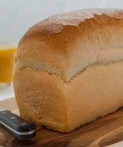

Het draait allemaal om onze toewijding aan vakmanschap, kwaliteit en smaak. Allereerst, onze nadruk op ambachtelijk vakmanschap is de hoeksteen van ons succes. Onze ervaren bakkers hebben jarenlange expertise en passie voor het bakken van klein brood. Ze begrijpen de subtiele nuances van het deegbereidingsproces en zorgen ervoor dat elk brood met zorg en precisie wordt gemaakt. Kwaliteit is voor ons van het grootste belang. We gebruiken alleen de beste ingrediënten, van de fijnste bloem tot de meest verse granen. Onze toewijding aan hoge normen in de selectie van grondstoffen vertaalt zich in broden die niet alleen heerlijk smaken, maar ook voedzaam zijn. Wat ons klein brood echt onderscheidt, is de verscheidenheid aan smaken en texturen die we bieden. Of je nu houdt van knapperig, licht en luchtig, of stevig en volkoren, we hebben een breed scala aan klein brood om aan ieders smaak te voldoen. Bovendien hechten we veel waarde aan traditie. Onze recepten zijn geworteld in eeuwenoude bakprincipes, en we koesteren de kunst van het broodbakken. Het gebruik van natuurlijke rijstijden en fermentatieprocessen draagt bij aan de unieke smaak van ons klein brood. Elk brood dat onze bakkerij verlaat, is een meesterwerk op zich. We geloven dat de presentatie net zo belangrijk is als de smaak, en daarom besteden we veel aandacht aan de textuur en het uiterlijk van elk klein brood. In onze bakkerij gaat het om liefde voor het vak en toewijding aan de kunst van het broodbakken. Ik nodig je van harte uit om zelf te proeven waarom ons klein brood als het beste wordt beschouwd. Bij elke hap proef je de passie en toewijding die in elk brood zijn verwerkt.
